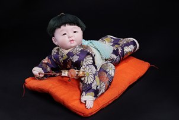

Haihai Ningyō (Búp bê em bé tập bò) là búp bê mô phỏng hình ảnh em bé đang tập bò, một trong những cột mốc đầu tiên trong hành trình phát triển của trẻ. Tác phẩm thuộc dòng Osana Ningyō (おさな人形) và Ichimatsu Ningyō (市松人形) – hai dòng búp bê nổi tiếng tái hiện hình ảnh trẻ em với vẻ đẹp hồn nhiên và sống động.
Búp bê được tạo hình trong tư thế bò trên một tấm đệm zabuton truyền thống, gợi nên khung cảnh quen thuộc trong các gia đình Nhật Bản. Gương mặt bầu bĩnh, đôi mắt trong trẻo, hai má hồng và đôi bàn tay đang chống xuống đệm được thể hiện vô cùng tinh tế, mang lại cảm giác như một em bé thật.
Trang phục của búp bê là kimono trẻ em với hoa văn truyền thống nhiều màu sắc, phản ánh tình yêu thương và sự chăm chút của gia đình dành cho con trẻ. Những đường nét mềm mại và biểu cảm tự nhiên là đặc trưng nổi bật của dòng Ichimatsu Ningyō, vốn được biết đến với khả năng tái hiện chân thực hình dáng và cảm xúc của trẻ em.
Trong văn hóa Nhật Bản, hình ảnh em bé tập bò tượng trưng cho sự khởi đầu của cuộc sống, sức khỏe, sự phát triển bền vững và niềm hy vọng vào một tương lai tươi sáng. Chính vì vậy, những búp bê như Haihai Ningyō thường được trưng bày trong gia đình hoặc dùng làm quà tặng nhân dịp em bé chào đời, đầy tháng hay các lễ hội dành cho trẻ em, với lời chúc các em lớn lên khỏe mạnh, bình an và hạnh phúc.
這い這い人形は、成長の旅路における最初の節目のひとつである、はいはいをする赤ちゃんの姿をかたどった人形です。本作は、子どもの無邪気で生き生きとした姿を再現する人形として知られる、おさな人形と市松人形の系統に属しています。
人形は伝統的な座布団の上ではいはいをする姿で、日本の家庭でおなじみの光景を思わせます。ふっくらとした顔、澄んだ瞳、赤いほお、座布団についた小さな手が非常に繊細に表現され、まるで本物の赤ちゃんのように感じられます。
人形の衣装は色とりどりの伝統文様の子ども用の着物で、わが子に注がれる家族の愛情と心配りを映し出しています。柔らかな線と自然な表情は、子どもの姿や感情をありのままに再現することで知られる市松人形の大きな特徴です。
日本文化において、はいはいをする赤ちゃんの姿は、人生の始まり、健康、健やかな成長、そして明るい未来への希望を象徴します。そのため這い這い人形のような人形は、家庭に飾られたり、出産祝い、お宮参り、子どものための行事などの贈り物にされたりして、子どもが健やかに、無事に、幸せに育つよう願いが込められてきました。